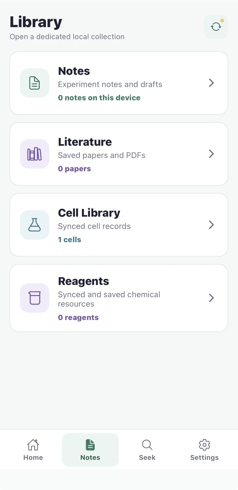
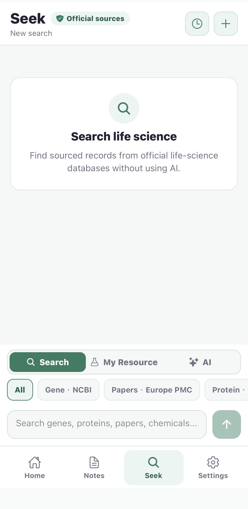
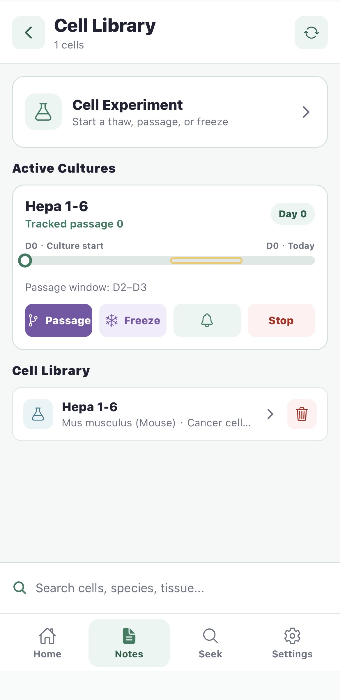

Pasero Mobile · Built for the bench雀角移动端 · 为实验台而生
Quick notes, timers, reminders, literature, and lab resources—right where the experiment happens.
快速笔记、计时、提醒、文献和实验资源，就在实验发生的地方。
Quick NoteOffline-firstExact timersLAN Sync



Bench-side workflows实验现场工作流
01 · Cell tracking
Start a thaw, passage, or freeze event, see the current culture day and passage window, and set the next reminder without leaving the cell record.
在细胞记录中直接开始复苏、传代或冻存，查看当前培养天数与传代窗口，并设置下一次提醒。

02 · Paper discovery
Still scrolling short videos? Try scrolling papers.
还在刷短视频？刷刷论文吧。
Desktop ↔ Mobile
Your work stays local. Sync stays simple.
数据留在本地，同步保持简单。
Pair Pasero Mobile with Desktop using a QR code, then sync notes, literature, linked resources, protocols, and cell culture records through your lab’s local network. No cloud account required.
扫描二维码连接 Pasero Mobile 与桌面端，再通过实验室局域网同步笔记、文献、关联资源、Protocol 和细胞培养记录，无需云端账号。
QR pairing二维码配对Local network sync局域网同步No cloud account无需云端账号
Desktop↔Mobile